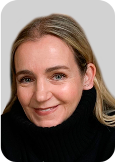
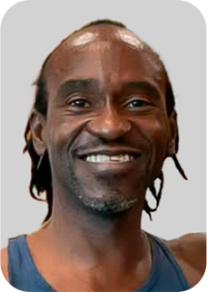
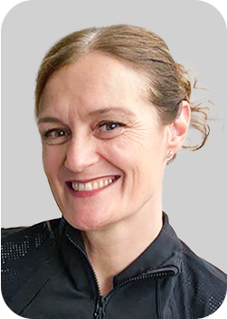
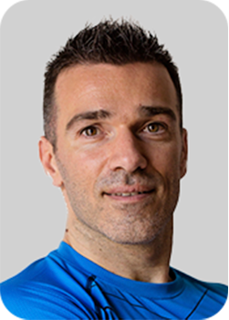

Dinner and a very special Pilates performance
by Li Xin China
€85.00 EUR
SATURDAY MAY 9, 2026
19:00 – 22:00
(7:00pm – 10:00pm)
SOLD OUT
The Pilates Heritage Congress is back, and it will be an honor to have you at this very special gathering.
Every two years, we have the opportunity to bring together the community that carries this legacy, strengthening ties between generations and celebrating together the heritage that connects us.
More than just a conference, Pilates Heritage is a living tribute to the legacy of Joseph and Clara Pilates — a space for authentic practice, the study of origins, and the preservation of the Method in its essence.
The highlight of the event in May 2026, will be the official ceremony to honor Joseph Pilates’ global impact. The city of Mönchengladbach, represented by the mayor and city council, will inaugurate the naming of the square surrounding his birthplace as “Joseph Pilates Platz.”
We will unveil the sign at this meaningful site, creating a space where Pilates practitioners from around the world can gather to celebrate and honor the incredible legacy he has given us.
And to make this experience even more complete, the International Pilates Heritage Congress we will have renowned teachers who dedicate their lives to keeping this heritage alive. Presenting at this amazing event will be Lolita San Miguel, Kathryn Ross Nash, Brett Howard, Benjamin Degenhardt, Maximilian Stohr, Tony Rockoff and Li Xin.
And, of course, I will be hosting and presenting as well.
See you May 7 – 10, 2026
Kathy Corey is one of the most prominent and influential Master Teachers in the international Pilates community. With close to five decades of experience, she has earned a reputation for preserving the legacy of Joseph Pilates while also advancing the method through modern education and innovation.
Her Pilates journey began in 1979 under the mentorship of Ron Fletcher, with whom she worked closely for over two decades. In the 1990s, as the Publicity Director for the Institute for the Pilates Method, she studied and interviewed the legendary first-generation teachers, including Romana Kryzanowska, Kathy Grant, Eve Gentry, Bruce King, and Carola Trier which deepened her understanding of the classical method.
Kathy Corey is the President and Director of the International Pilates Heritage Society and Congress, held in Mönchengladbach, Germany—the birthplace of Joseph Pilates. This distinguished global event unites top educators and practitioners to honor, preserve, and share the rich history of the Pilates method. In May 2025, Corey partnered with the City of Mönchengladbach in an official capacity to further preserve Joseph Pilates’ legacy and deepen the connection between his life’s work and his hometown.
Throughout her career, Kathy Corey has remained dedicated to upholding the original principles of Pilates while welcoming innovation and growth. Her teachings continue to inspire generations of Pilates professionals. She is widely regarded as a guardian of the Pilates legacy and a visionary educator whose work ensures the timeless power of Joseph Pilates’ method endures.
Lolita San Miguel, PMA®️-CPT, born in New York of Puerto Rican parents, is a first generation Pilates teacher and has been practicing Pilates for 59 years.
She started her studies of body movement at the age of seven as a ballet student and had a distinguished career in dance starting at the age of 15 with companies such as the Slavenska Franklin Ballet, Joffrey Ballet, and was soloist with the Metropolitan Opera Ballet for ten years.
She fell in love with the Pilates Method, apprenticed with Carola Trier and subsequently apprenticed with Joseph and Clara Pilates, being certified by Joseph Pilates in 1967. A believer in continuous education, she also earned a certificate from Polestar Pilates in 2003.
Lolita moved with her husband to Puerto Rico in 1977. There she founded Ballet Concierto de Puerto Rico where she was Artistic Director for 26 years and also founded Pilates y Mas, Inc. in 2000. She returned to the mainland in 2005, started her successful 160-hour Pilates Master Mentor Program and has produced eleven best-seller DVDs. In 2013 she launched her 500-hour Lolita’s Legacy teacher training program, which is taught the world over: in Australia, South America, Central America, Puerto Rico, Japan, Scotland, the Ukraine, Europe and of course the U.S.
Ms. San Miguel is particularly proud of her initiatives to honor Joseph Pilates both in his birthplace and in his resting place in Ferncliff Cemetery, in New York. These initiatives have led to the memorial plaque on the site where he was born here in Monchengladbach, and international biennial Pilates conferences, such as the one you are attending and as of 2016, one in New York City.
Renata Sabongui, born in Czechoslovakia, is a university lecturer, arts manager, and producer with international experience. She holds a Master of Arts from the Academy of Performing Arts in Prague and is pursuing a Ph.D. in Biomechanics at Charles University. A Ron Fletcher Program of Study graduate and Second Generation Teacher certified by Lolita San Miguel, she has studied with renowned mentors including Kathy Grant and Romana Kryzanowska. With over 30 years of teaching experience, Renata teaches at international Pilates congresses and continues to teach at the Academy. She has produced five Pilates DVDs, a book, and co-created Joseph Pilates’ memorial plaque.




Kaiser-Friedrich-Halle
Hohenzollernstraße 15
41061 Mönchengladbach, Germany
The official hotel for the Congress is the Mercure Parkhotel Monchengladbach. Please contact the hotel directly for reservations or book through Expedia or Booking.com.
For other hotels, apartments and B&Bs visit Booking.com, Hotels.com, or TripAdvisor.
| TIME | ROOM | PRESENTER | COURSE |
|---|---|---|---|
12:00 - 16:00 |
BALLROOM 2 |
KATHRYN ROSS NASH |
MATWORK The Red Thread™ of the Mat - Order Of Learning Is Important Workshop How the Mat works build upon itself in the Classical Order. This workshop looks at how the work builds upon itself by taking the Foundational work and changing the body orientation in space, decreasing the points of stability and dynamic action to create a balanced workout that works the entire body from the inside out. Although we know Mr. Pilates had an “order” the order in which the exercises are added and how skills are developed gradually is the true magic of the method. Learn how to build skills by using the “Add Next Order” of the Mat. |
Bold events are open to all
| TIME | ROOM | PRESENTER | EQUIPMENT |
|---|---|---|---|
8:00 – 9:15AM |
FOYER |
KATHY COREY, BOARD MEMBERS AND VOLL TEAM |
REGISTRATION – ALL ATTENDEES Pick up your name badge and welcome bag and meet and greet the attendees. |
9:15 – 9:45AM |
BALLROOM 1 |
KATHY COREY, LOLITA SAN MIGUEL, BOARD MEMBERS and PRESENTERS |
WELCOME CEREMONY |
10:00 – 12:30 |
BALLROOM 2 |
LOLITA SAN MIGUEL |
MAT Building Blocks for Mat Starting with Posture Check, Spine moves, Feet articulations, progressing to Pre-Pilates, Joseph Pilates exercises and ending with Post Pilates while standing and reaffirming the Perfect Pilates Posture. |
10:00 – 12:30 |
BALCONY HALL |
KATHY COREY |
REFORMER WITH TOWERS REFORMER/TOWER INNOVATIONS Learn how to combine traditional pieces and innovative exercises that are adapted for the Reformer and Tower. This program transfers movement patterns and sequences to this inventive piece of equipment and blends classic movements with new developments designed specifically for this combination piece of equipment. The course will teach spring and equipment set up to fully explore the most effective way to use this creative piece of equipment performing a combination of Cadillac and Reformer exercises at the same time. |
10:00 – 12:30 |
SOCIETY ROOM |
TONY ROCKOFF |
REFORMER Universal Reformer – Joseph Pilates‘ Original Sequence An Interactive Masterclass We won‘t cover the entire repertoire in 2 hours – instead, we‘ll focus on YOUR most challenging and requested exercises! How it works:
|
10:00 – 12:30 |
BALLROOM 1 |
BENJAMIN DEGENHARDT |
STUDIO SUITE TACTILE FEEDBACK Hands-on instruction is one of the most effective ways for Pilates teachers to ensure their work is effective, honest, and tailored to the body in front of them. The teacher’s hands can see what eyes can’t see, say what words can’t say, and provide sensations that the student won’t “unfeel”. This workshop demonstrates easily implementable hands-on and spotting strategies across the studio for enhanced two-way communication. |
10:00 – 12:30 |
FOYER |
KATHRYN ROSS NASH |
WUNDA CHAIR The Wunda Chair is known for its ability to build strength. Rotation is integrated into our every day life. It resets the spine to balance and increases your breath. Learn how to properly use the Chair to build the strength needed for the advanced and super advanced Reformer exercises. Build your Twist from seated- to standing to side lying and above. One arm leads to side bending, which is the mother of Twisting. Create lengthen, stretch and strength by increasing your Twist on the Wunda Chair. The Wunda can provide and teach the points of stability and oppositional forces used and implanted through out the method and applied to rotation. Learn how to use this Wundaful chair in all its glory to find new depth in your Twist. |
12:30 – 14:00 (12:30 – 2:00PM) |
EXHIBITION HALL OPEN |
- |
LUNCH |
14:00 – 16:00 (2:00 – 4:00PM) |
BALLROOM 2 |
BENJAMIN DEGENHARDT |
MAT MASTERING THE C-CURVE “C-Curve” is a term unique to the Pilates community, coined as a shorthand to describe an even forward bend of the spine. During this workshop, participants get to proactive the C-Curve, understand its relevance in the Mat repertoire (and beyond), and find new ways to interpret it for their students when spinal flexion is limited. |
14:00 – 16:00 (2:00 – 4:00PM) |
BALCONY HALL |
KATHRYN ROSS NASH |
REFORMER WITH TOWERS The Space Between – Transitions Reformer A true Pilates workout is one continuous flow of energy, building, and deepening from beginning to end. It is not only the exercises but it is the space between them that creates this flow. These transitions. Learn to increase your flow, depth of the workout, and how to move through the spaces between. Each transition is an exercise! The space between each exercise connects you to the next and prepares you for what is to come. |
14:00 – 16:00 (2:00 – 4:00PM) |
SOCIETY ROOM |
MAXIMILIAN STOHR |
REFORMER OPPOSITIONAL ENERGIES Description: Joe Pilates said: “I invented all these machines. I thought, why use my strength? So I made a machine to do it for me. Look, you see it resists your movement in just the right way so those long inner muscles really have to work against it. That is why you can concentrate on movement.” Let's take advantage of the Reformer to work on the most important principle which makes any movement safe: Oppositional Energies. |
14:00 – 16:00 (2:00 – 4:00PM) |
BALLROOM 1 |
LI XIN |
STUDIO SUITE Pilates Meets Chinese Wisdom – The Perfect Harmony of mind and body. A dialog between Eastern and Western wisdom, mapping the twelve Meridien’s through Pilates movement and activating key acupoints in Pilates. |
14:00 – 16:00 (2:00 – 4:00PM) |
FOYER |
BRETT HOWARD |
SPINE CORRECTOR Stretch, Strength and Control on the Pilates Spine Corrector Barrel Students will delve into ways of building greater strength, mobility and control in all dimensional planes of movement using the Pilates Spine Corrector Barrel. Students will learn how to use scaffolds to create a strong foundation to then later build onto with higher skilled movements and exercises. Exercise variations from multiple Pilates Master Teachers are given and developed upon in the workshop. |
17:00 – 18:00 (5:00 – 6:00PM) |
MEET AT KAISER-FRIEDRICH-HALLE AT 17:00 (5:00) |
ALL PRESENTERS AND ATTENDEES |
CEREMONY AT THE PLAQUE |
18:00 – 19:00 (6:00 – 7:00PM) |
FOYER |
ALL PRESENTERS AND ATTENDEES |
WINE AND CHEESE AND ROUND TABLE |
Bold events are open to all
| TIME | ROOM | PRESENTER | COURSE |
|---|---|---|---|
8:00 – 8:45AM |
BALLROOM 2 |
NAGI TAKAHASHI AND MURIELLE PICKARD -DELLIS |
MORNING MAT |
9:00 – 11:00AM |
BALLROOM 2 |
BRETT HOWARD |
MAT Mastering Control on the Mat Joseph Pilates referred to his method as the Art of Control. “Contrology develops the body uniformly, corrects wrong postures, restores physical vitality, invigorates the mind, and elevates the spirit” Joseph Pilates (1945). In this workshop, tools are given to foster ways of attaining greater consistent control in Pilates. Participants learn various approaches of scaffolding and deconstructing the Pilates exercises, as well as learn how to recognize the skills involved in the exercises to strengthen those skills. |
9:00 – 11:00AM |
BALCONY HALL |
LOLITA SAN MIGUEL |
REFORMER WITH TOWERS The Reformer and Tower Join Lolita for this unique experience with her Reformer/Tower program. |
9:00 – 11:00AM |
SOCIETY ROOM |
BENJAMIN DEGENHARDT |
REFORMER ADVANCED PUSHES & PULLS This workshop focuses on upper body strengthening and shoulder mobilization exercises like Rowing, Chest Expansion, Side Arm variations, and more. Learn useful breakdowns and build-ups, discover exercise relationships within the Pilates system, and reignite your personal practice! |
9:00 – 11:00AM |
BALLROOM 1 |
MAXIMILIAN STOHR |
STUDIO SUITE EX-TENSION Spine extension is a movement we unfortunately do not do during the day. Nowadays back muscles are generally weak and tight (especially in the lumbar zone). Many teachers are afraid to work extensions. We will have a fully equipped Pilates Studio to understand and progress safely this great movement which will make everyone look proud. |
9:00 – 11:00AM |
FOYER |
KATHY COREY |
PED O PUL THE PED O PUL -- EXERCISES FOR BETTER POSTURE, HEALTHY SHOULDERS AND BALANCE The Pilates Ped-O-Pul: Exercises for Better Posture, Healthy Shoulders, and Balance reveals the secrets of one of Pilates’ most underutilized tools. This comprehensive class explores how the Ped-O-Pul can enhance posture, improve balance, and support healthier movement patterns. This class provides a wealth of exercises and insights, transforming the Ped-O-Pul into an essential tool for improving posture, identifying imbalances, and refining movement patterns. From promoting shoulder mobility and core activation to enhancing balance and coordination, the Ped-O-Pul serves as both a diagnostic tool and a solution for clients of all ages and abilities. |
11:15- 12:30 |
BALLROOM 2 |
LOLITA SAN MIGUEL |
LOVING OUR MAT (OPEN TO ALL) |
12:30 – 13:30 (12:30 – 1:30PM) |
WALKING TOUR OF JOSEPH PILATES HOUSES |
- |
MEET AT PLAQUE FOR A GUIDED TOUR OF THE PLACES WHERE JOSPH PILATES LIVED |
12:30 – 14:00 (12:30 – 2:00PM) |
EXHIBITION HALL OPEN |
- |
LUNCH |
14:00 – 16:00 (2:00 – 4:00PM) |
BALLROOM 2 |
KATHRYN ROSS NASH |
MAT The Space Between – Transitions Mat A true Pilates workout is one continuous flow of energy, building, and deepening from beginning to end. It is not only the exercises but it is the space between them that creates this flow. These transitions. Learn to increase your flow, depth of the workout, and how to move through the spaces between. Each transition is an exercise! The space between each exercise connects you to the next and prepares you for what is to come. |
14:00 – 17:00 (2:00 – 5:00PM) |
BALCONY HALL |
MAXIMILIAN STOHR |
REFORMER WITH TOWERS FLOWING PROGRESSIONS Description: Cadillac/Tower is my favorite apparatus to work spine mobility. I love flowing patterns. Let's have fun building up progressions to enjoy our spine. |
14:00 – 17:00 (2:00 – 5:00PM) |
SOCIETY ROOM |
BRETT HOWARD |
REFORMER Building Upwards on the Reformer The key to mastering the execution of challenging Reformer exercises is a strong foundation. In this workshop , students will learn how to to safely progress the exercises by forming a powerful base by deconstructing and simplifying Pilates exercises to then build onto. Students will examine the movement skills involved in the exercises, recognize like skills in other exercise and then develop strategies to build on top of the skills. |
14:00 – 16:00 (2:00 – 4:00PM) |
BALLROOM 1 |
TONY ROCKOFF |
STUDIO SUITE Teach the old way: Rediscovering Joseph Pilates' Teaching Method This workshop is for Pilates instructors who want to bring back Joseph Pilates' original approach. Joseph believed in guiding students toward independence, teaching them to perform exercises autonomously and develop self-motivation. Today’s classes often rely on constant external instruction, but this workshop will help you empower your students to take responsibility for their own practice. Learn how to foster a deeper connection between body, mind, and soul, and inspire lasting self-motivation in your clients. |
14:00 – 17:00 (2:00 – 5:00PM) |
FOYER |
BENJAMIN DEGENHARDT |
WUNDA CHAIR FITNESS FROM THE GROUND UP The Pilates method has a strong traditional emphasis on beginning the exploration of improved fitness “from the ground up”, or in other words: feet first. For this workshop, we focus on the feet and lower body strengthening movements,and follow the Wunda Chair’s unique learning curve towards the more athletic challenges inherent to the apparatus. |
19:00 - 22:00 (7:00 – 10:00PM) |
- |
PRESENTERS, INVITED GUESTS AND ATTENDEES |
SPECIAL DINNER WITH THE PRESENTERS (Only included with the Premium Package) |
Bold events are open to all
| TIME | ROOM | PRESENTER | COURSE |
|---|---|---|---|
8:00 AM |
LOBBY |
LOLITA’S CHOICE |
LOLITA’S BODY WALK |
8:00 – 8:45AM |
BALLROOM 2 |
SUUS JANSSEN AND FABRICE LAMEGO |
MORNING MAT |
9:00 – 11:00AM |
BALLROOM 2 |
TONY ROCKOFF |
MAT Archival Mat JOE´s original 34 Discover the true heart of Pilates – just as Joseph intended. In this special workshop, we’ll explore Return to Life and dive into the 34 original exercises in their purest form. You’ll learn what makes them so powerful – and why Romana and other teachers later adapted them. Ready to bring more depth to your practice? Join us – we’d love to have you! |
9:00 – 11:00AM |
BALCONY HALL |
KATHY COREY |
REFORMER WITH TOWERS PILATES REFORMER ADVANCED PROGRESSIONS The advanced reformer exercises are very challenging and often not understood. This course breaks down the advanced patterns into the essence of the movement in order to progress from one level to the next. The focus of the course is to understand the depth of the exercise and make the challenge of the movement a progression for every level of fitness. |
9:00 – 11:00AM |
SOCIETY ROOM |
KATHRYN ROSS NASH |
REFORMER Variations on the Reformer Part 1: Building Variations Part 2: Challenge Variation So many variations and so little time. Unveil the why, what, when & who of choosing the correct variation for the needs of the student. When the purpose of each exercise is focused on, the variation choice is simplified. In this workshop you will learn not only what to choose, but why to use one variation over another & maintain the purpose of each exercise. |
9:00 – 11:00AM |
BALLROOM 1 |
LOLITA SAN MIGUEL |
STUDIO SUITE A Little of Each Joe’s Creative genius extended to apparatus he constructed himself where he applied much of his Matwork–Cadillac (Tower), Reformer, Chair, Ped o Pull, Magic Circle. We will visit them all for as long as time allows. |
9:00 – 11:00AM |
FOYER |
MAXIMILIAN STOHR |
SPINE CORRECTOR OBLIQUES (SIDE WORLD) Description: The Spine Corrector is mainly used to work spine extension or flexion. Let's go through some great patterns to joyfully strengthen and stretch the sides of the body. Obliques are very important muscles to support the spine... Let's use them! |
11:15 - 12:30PM |
BALLROOM 2 |
KATHY COREY |
SPECIAL MAT CLASS FOR ALL |
12:30 – 13:30 (12:30 – 1:30PM) |
EXHIBITION HALL OPEN |
- |
LUNCH |
13:30 – 15:30 (1:30 – 3:30PM) |
BALLROOM 2 |
BENJAMIN DEGENHARDT |
MAT BREAK IT DOWN & FLOW During this workshop, get your burning questions on the original Mat exercises answered, then practice them in community - again and again! Alternating between individual exercise focus and quickfire sequences to highlight the importance of the order, its rhythms, and flows, the workshop also includes standing exercises and unique variations and transitions. |
13:30 - 15:30 (1:30 – 3:30PM) |
BALCONY HALL |
BRETT HOWARD |
REFORMER WITH TOWERS Exploring and Creating on the Reformer Tower Combo Students will explore repertory on the Reformer Tower Combo units. They will analysis, deconstruct and build on top of that repertory as well as examine useful and helpful variations of the exercises |
13:30 - 15:30 (1:30 – 3:30PM) |
SOCIETY ROOM |
TONY ROCKOFF |
REFORMER Universal Reformer – Joseph Pilates‘ Original Sequence An Interactive Masterclass We won‘t cover the entire repertoire in 2 hours – instead, we‘ll focus on YOUR most challenging and requested exercises! How it works:
|
13:30 - 15:30 (1:30 – 3:30PM) |
BALLROOM 1 |
KATHY COREY |
STUDIO SUITE PILATES IN MOTION: ONE MOVE, MULTIPLE APPARATUS Discover the same exercises performed on various apparatus. Explore how differently the Pilates movements activate individual muscle groups when we change the body position and spring resistance on various pieces of equipment. This class offers a deeper understanding of how to increase challenge and deepen the work by focusing on movement principles and concepts as we move the exercises from one piece of equipment. to another. |
13:30 - 15:30 (1:30 – 3:30PM) |
FOYER |
LOLITA SAN MIGUEL |
SPINE CORRECTOR Join Lolita for this unique experience with her Spine Corrector Program. |
15:45 – 16:30 (3:45 – 4:30PM) |
BALLROOM |
PRESENTERS & ATTENDEES |
CLOSING CEREMONIES |
After payment, you will be able to choose 6 workshops.
€85.00 EUR
SATURDAY MAY 9, 2026
19:00 – 22:00
(7:00pm – 10:00pm)
€175.00 EUR
€675.00 EUR
€725.00 EUR
Plus:
€790.00 EUR
Plus:
If we receive your cancellation notice any time 60 days prior to the event, the administrative processing fee is 150 euros. There will be no refunds allowed after that date or for no-shows. Please allow 30 days for the credit to be processed.
 Kathy Corey
Kathy Corey
Do you believe in preserving the legacy of the Pilates Method and want to help spread this mission?
Then this invitation is for you! Become a Pilates Heritage 2026 Ambassador and unlock exclusive benefits.
This is your chance to experience Pilates Heritage 2026 in an even more meaningful way — by sharing, influencing, and becoming part of history.
For more information, please fill out the form below: